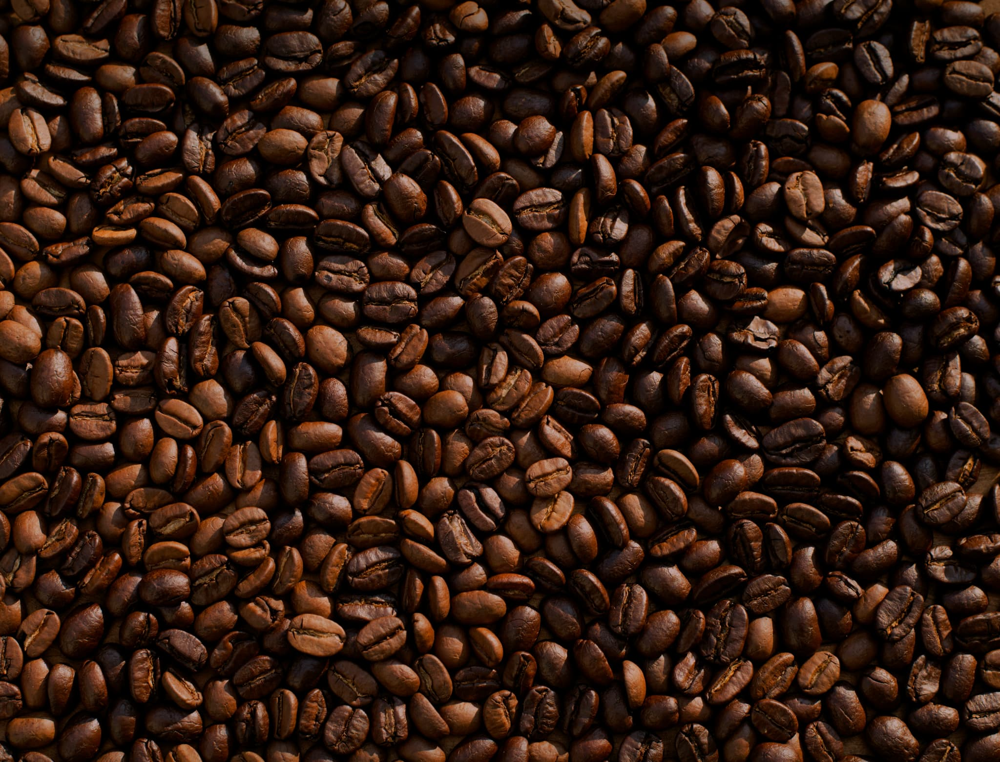
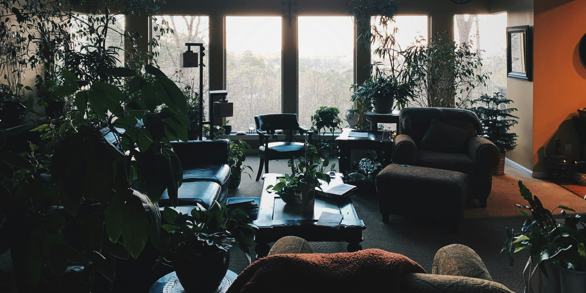
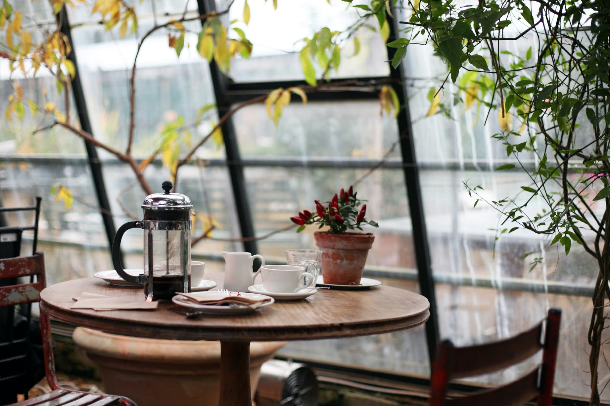

About
喫茶 綴ルについて
Owner's Thoughts
静かな時間を、もう一度取り戻すために。
喫茶綴ルは、深煎り珈琲と本を通じて、日常から少し離れた静かな時間を提供する喫茶店です。忙しさの中で散らばった思考を整え、自分の言葉を取り戻す場所でありたいと考えています。

Coffee
コーヒーへのこだわり
オーナー自らが焙煎した、深煎り中心の珈琲豆を使用しています。 香りの立ち上がり、口に含んだときの厚み、余韻の静けさを大切にし、 一杯の珈琲が本の世界へ入るための入口になるよう、丁寧に淹れています。

Concept
店のコンセプト
「ゆるめる・つながる・ひらく」をテーマに、本と人が静かに出会う場所を目指しています。 ひとりで考えを深める時間も、誰かと感想を交わす時間も、どちらも大切にできるよう、 急がず、押しつけず、余白のある空間を整えています。

Atmosphere
店内・店外の雰囲気
木の温もりと柔らかな照明により、静かで落ち着いた空間をつくっています。 日常から少し離れ、呼吸を整えられる場所でありたいと考えています。